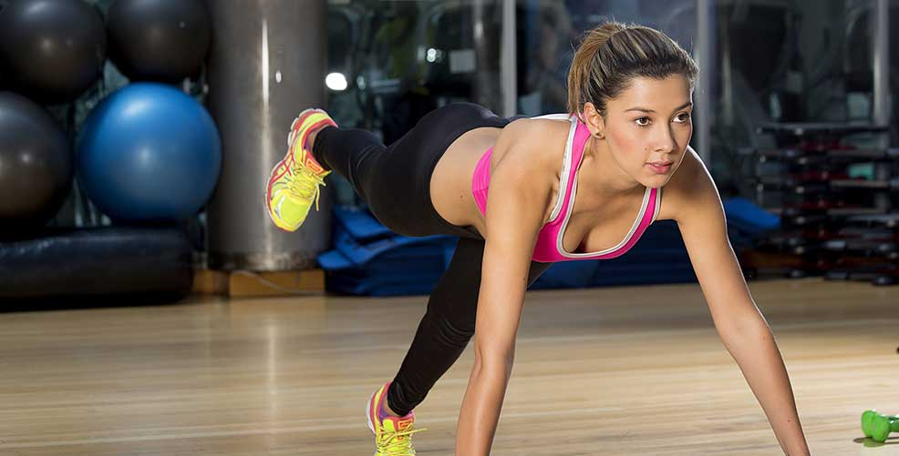

Desde muy pequeña tenía claro que quería ser modelo.
Su estatura y belleza llevaron a su mamá a matricularla
en clases de modelaje desde los 8 años. De esta manera
empieza a prepararse y a ser la imagen de distintas
campañas publicitarias en Cartagena, su ciudad natal. En el
2011, participó en el Reinado Nacional De Belleza. En el
2013 ganó en Ecuador el concurso Models International
Search, en el mismo país fue invitada a participar en Calle
Siete, un reality de deportes extremos. Actualmente Laura
Kantillotiene muchos proyectos, aunque el modelaje
es su mayor pasión, esta cartagenera disfruta también la
presentación, por esta razón viajará a la Ciudad del Sol a
realizar un casting con Telemundo.
Agradecimiento
Cortesía: Locación - Acondicionamiento físico Alex Fitbox - Carrera 13 N° 103-10
Vestuario: Ziu @ziuteffy

Toca para ver la galería
Fotografía por: Paulo Cajigas
• Constantemente se aplica mascarillas
naturales para el cuidado del cabello con
ingredientes como el aguacate y el aceite
de argán. También utiliza productos
profesionales como ampolletas y cremas
termo-protectoras antes de peinarse.
• Visita la dermatóloga una vez al mes en
donde se realiza tratamientos con láser para
activar el colágeno. Tiene una ley básica
que es desmaquillarse antes de acostarse.
Utiliza tónicos, cremas y contornos de ojos
para piel delicada.
• No tiene una dieta estricta, tampoco se
priva de ningún placer por lo que es una
mujer que viaja mucho. Pero si incluye en
sus platos verduras, proteínas y frutas. No le
puede faltar el desayuno, es su energía para
iniciar el día.
• Entrena seis veces a la semana con Alex
Peña, en donde realiza diferentes ejercicios
diarios. Le encanta bailar y tomar clases de
Pole Dance para tonificar su cuerpo.
{kind=link}
{kind=link}
{kind=link}
{kind=link}
{kind=link}